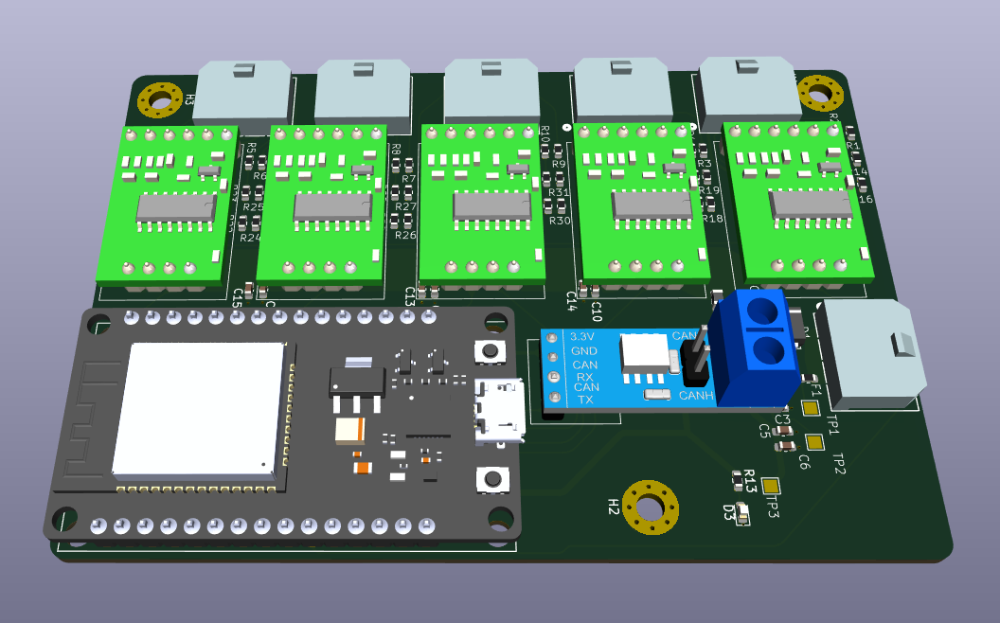

Suspension Monitoring with Strain Gauges
Half-bridge strain gauge circuit for monitoring suspension arm deflection in a Formula SAE vehicle



Project Overview
Monitoring the deflection of the push rods in the suspension will help us understand how the suspension
is performing and if it is operating within the desired range. The strain gauge circuit was designed to
be a half-bridge configuration, which allows for more accurate measurements of strain than a quarter-bridge.
The strain gauges must be placed on the other side of the push rod exactly opposite to the other so that
we are getting accurate strain radings at that location.
with this setup, one strain gauge will be in tension while the other is in compression, which makes the voltage
differential we are trying to measure larger. The strain gauges are connected to a Wheatstone bridge circuit,
which converts the small changes in resistance of the strain gauges into a voltage we can measure and amplify
with an HX711 chip.
The HX711 chips have a 24 bit resolution (which is well above our noise rejection ratio) and sample at 10hz or 80hz.
We opted for 10hz sampling because this results in far less noise because of the sinc LP filter which is not
available when sampling at 80hz.
Once these readings are taken, they are sent over CAN to the main ECU, which then logs the data.
The pcb is designed to be compact so it can be easily attached during testing, and removed for competition.
Key Features
- 12V -> 5V buck converter
- sensitive analog measurement
- CAN communication
- Strain gauges
- Half Bridge Configuration